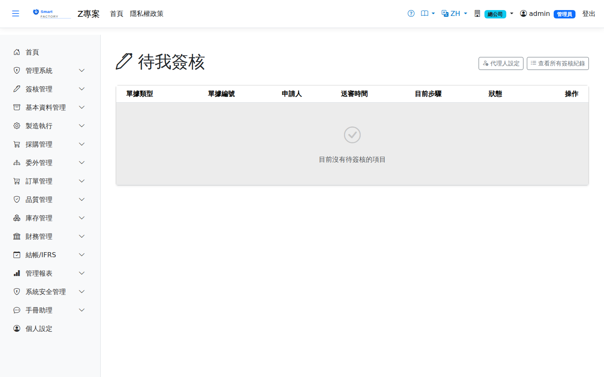
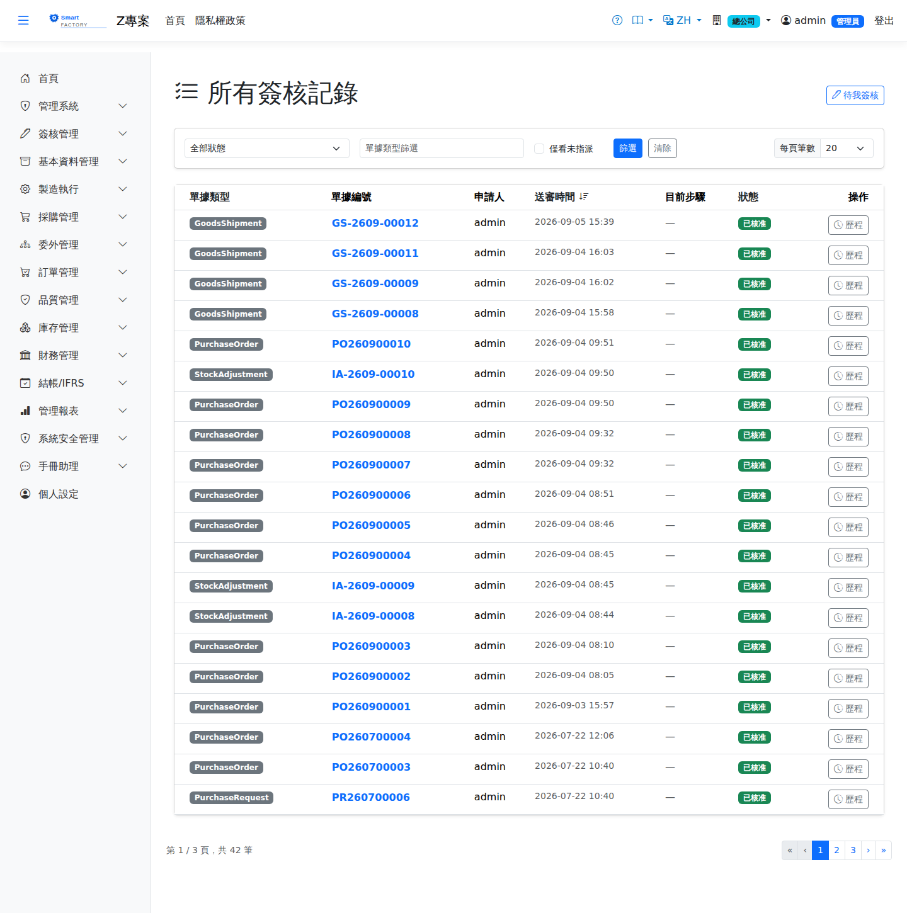

待我簽核／所有簽核記錄My Pending / All Approval Requests
簽核流程有兩個入口，本頁一併說明：Approval has two entry points, and this page covers both: 待我簽核My Pending Approvals是每位簽核者的個人待辦清單； is each approver's own to-do list, and 所有簽核記錄All Approval Requests則供管理者綜覽全部申請單、追查卡住的單並重新指派簽核人。 lets managers see every request, track down ones that are stuck and reassign the approver.

待我簽核My Pending Approvals
清單只列出The list shows only what is 指派給您本人的待簽單assigned to you。判定依據包含您的帳號與. That is decided by your account and by the 目前作用中的角色role currently in effect：若簽核步驟指定的是角色，只有在您切換到該角色時才看得到那張單。: when a step targets a role, the request only appears while you have switched to that role.
簽核一張單Signing a request
三種處理方式The three ways to process a request
| 處理方式Action | 結果Result |
|---|---|
| 核准Approve | 進入下一個簽核步驟；已是最後一步則單據狀態轉為已核准並生效。Moves to the next step; on the last step the document becomes approved and takes effect. |
| 拒絕Reject | 流程The flow ends 就此結束there and then，單據不生效。申請人需另行處理。, and the document does not take effect. The requester has to deal with it separately. |
| 退回修改Return for revision | 單據回到申請人手上，可修改後The document goes back to the requester, who may change it and 重新送審submit it again。與拒絕的差別在於流程還留著。. Unlike a rejection, the flow is not closed. |
也可以在手機上簽You can also sign on a phone
手機版有同一份「待我簽核」清單，在哪一邊簽都一樣，簽完另一邊就會少一張。手機上看得到金額、廠別、主檔欄位與前幾筆明細，足以做決定；完整單據仍請用電腦版開啟。The mobile app has the same pending list, so signing on either side removes it from the other. The phone shows the amount, plant, header fields and the first few lines — enough to decide; open the desktop app when you need the whole document.
兩個差別要知道：手機上只有核准與駁回，沒有「退回修改」——需要退回請用電腦版；另外只有看得到摘要內容的單別才簽得了（目前 14 個），其餘單別在手機上看得到但會明說要用電腦版。詳見Two differences to know: the phone offers only Approve and Reject — there is no "Return for revision", so use the desktop for that; and only document types whose content can actually be shown can be signed there (14 today), while the rest are visible but say to use the desktop. See 手機版的待我簽核My Approvals on mobile。.
簽核歷程Approval history
每張申請單都可查看歷程：依序列出每一步的簽核人、動作、時間與意見。若該步驟是由Every request has a history: each step in order, with the approver, the action, the time and the comment. When a step was signed by a 代理人delegate簽的，歷程會一併標示他是代表誰簽的。自動跳簽的步驟也會留下紀錄。, the history also records on whose behalf they signed. Steps that were skipped automatically are recorded too.
撤回申請Withdrawing a request
送錯了想收回？Submitted by mistake? 只有申請人本人Only the requester可以撤回，而且必須是還在進行中的單。撤回後資料回到草稿狀態，修改後可重新送審。 can withdraw a request, and only while it is still running. The record returns to draft, and can be changed and submitted again.
代理人（請假時）Delegates (while you are away)
從「待我簽核」畫面右上角的From 代理人設定Delegate settings可以指定自己的代理人與代理期間（起訖日）。設定生效時： at the top right of "My Pending Approvals" you can name your delegate and the period they cover (a start and end date). When the setting is in effect:
所有簽核記錄All Approval Requests
此畫面列出This screen lists 所有狀態requests in every status的簽核申請單，可依狀態、單據類型篩選，並依單據類型、狀態或建立時間排序。單據類型欄依介面語系顯示名稱（如「採購單」）；篩選框比對的是單據類型代碼（如 PurchaseOrder，可只打一部分），排序也依代碼。需要「所有簽核記錄」的讀取權才進得去。, filtered by status and document type and sorted by document type, status or creation time. The document type column shows the name in the interface language (such as "Purchase Order"); the filter box matches the document type code (such as PurchaseOrder, partial input allowed), and sorting also follows the code. Read permission for "All Approval Requests" is required to open it.

找出卡住的單：未指派簽核人Finding stuck requests: unassigned approver
勾選Ticking 僅看未指派Unassigned only篩選，可列出「狀態仍是進行中，卻沒有任何簽核人」的單。這種單 lists requests that are still running yet have no approver at all. Such a request 不會出現在任何人的待我簽核appears in nobody's pending list，也不會報錯，只會安靜地停在那裡。成因是主管型步驟解析不到人——申請人的角色沒掛組織單位、組織單位沒有上層，或上層單位底下沒有任何使用者。, raises no error, and simply sits there. It happens when a supervisor step cannot resolve a person: the requester's role has no organization unit, the unit has no parent, or no user sits under the parent unit.